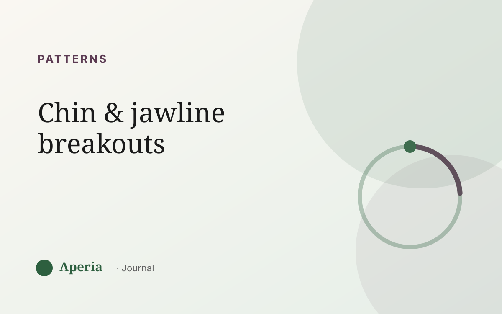

Patterns
Why do I break out on my chin and jawline?
If your breakouts keep landing on your chin and along your jaw — the same lower band of your face, month after month — you've noticed one of the clearest patterns in skin. This zone isn't random. For a lot of people it's the part of the face that responds most to the natural rise and fall of hormones across the cycle.
Why the chin and jaw, specifically
The lower third of the face has a high concentration of oil glands, and those glands are especially sensitive to hormonal shifts. When the balance of hormones tips in the second half of your cycle, these glands can produce a little more oil and pores can clog more easily. The result tends to show up first — and most — right here.
Chin and jaw breakouts in the same week each month are less ‘bad luck’ and more a schedule you haven't been shown yet.
When it usually shows up
The classic timing is the week or so before your period. That's the stretch when the hormonal balance is most likely to nudge the skin. If you map it, you'll often find your chin flares in the same window, then calms once your period arrives. Knowing the window is what turns a surprise into something you can see coming.
What isn't causing it (usually)
It's easy to blame your phone screen, your pillowcase, or your toothpaste. Those can irritate skin in some people, but they don't explain a breakout that returns to the same zone on the same week every month. A repeating, cyclical pattern points to rhythm, not a dirty phone.
What actually helps
- Keep your routine steady through the whole month rather than overhauling it the day a spot appears.
- Be gentle — scrubbing or picking a hormonal spot tends to make it angrier and slower to heal.
- Track the timing, so a flare in your usual week stops feeling like an emergency.
Read your own map
You don't have to guess where or when. Aperia scans your skin and scores it by zone, tracked alongside your cycle. After a few weeks your chin-and-jaw pattern shows up on the timeline with a week attached to it — so you can meet it calmly instead of scrambling.
Common questions
Are chin and jawline breakouts always hormonal?
Not always, but a breakout that returns to the same lower-face zone in the same week each month is a strong sign your skin is following your hormonal cycle. Tracking it over a couple of months is the clearest way to see the pattern for yourself.
Why do I get a spot in the exact same place every month?
Certain zones — very often the chin and jaw — respond most to the hormonal shift in the second half of your cycle. Those areas flare first, which is why the same spot can feel like it's on a schedule.
Does my phone or pillowcase cause jawline breakouts?
They can irritate skin for some people, but they don't explain a cyclical breakout that returns to the same place at the same time each month. A repeating monthly pattern points to your cycle, not your phone.
What actually helps chin and jaw breakouts?
Consistency over panic-buying: a steady, gentle routine kept up across the whole month, not picking at spots, and tracking the timing so you can anticipate your flare week instead of reacting to it.
See your own skin pattern
Track your skin and your cycle together. Free to start.
Download on the App StoreAperia is a self-knowledge tool, not a medical service. It helps you understand and track your skin; it doesn't diagnose, treat or cure anything. If you're concerned about your skin, talk to a qualified professional.